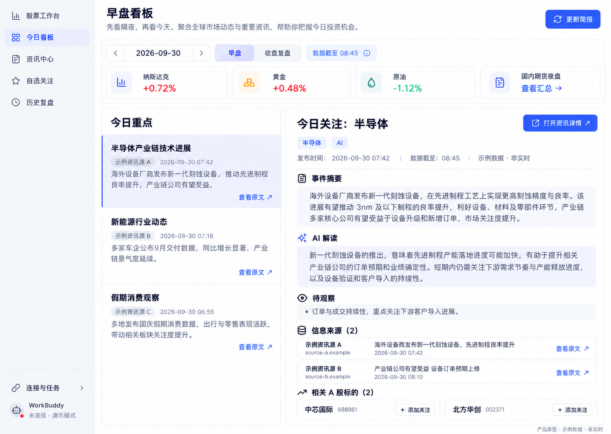
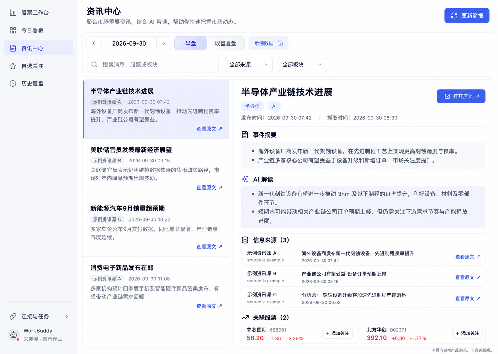
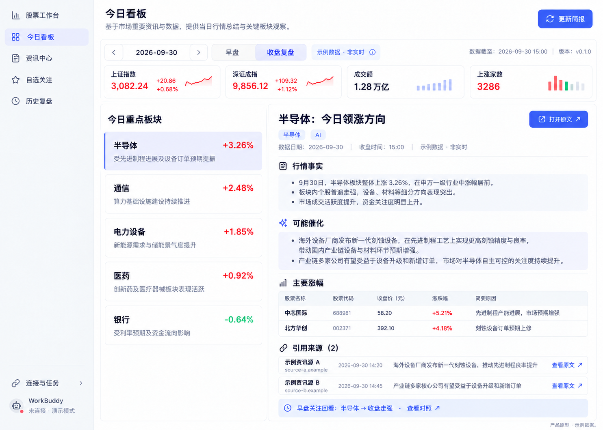
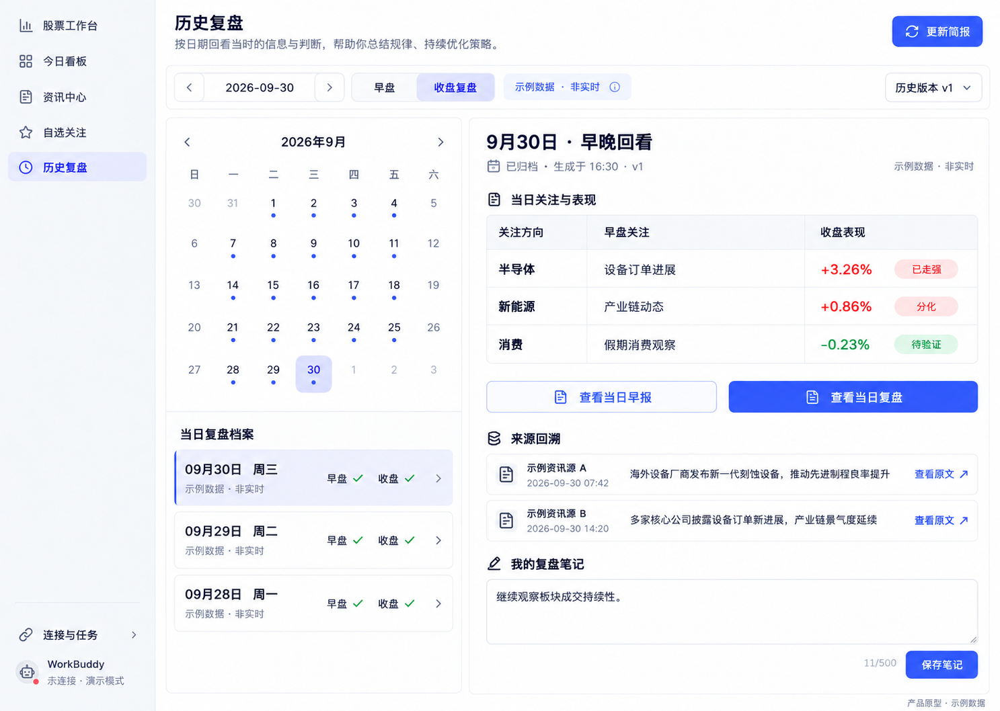

<!doctype html><html lang="zh-CN"><meta charset="utf-8"><meta name="viewport" content="width=device-width,initial-scale=1"><title>股票工作台 · 核心页面原型</title><style>html{scroll-behavior:smooth}body{margin:0;background:#f4f5f8;color:#202538;font:16px system-ui}header{position:sticky;top:0;background:#fffffff2;border-bottom:1px solid #ddd;padding:18px 32px;z-index:2}h1{font-size:21px;margin:0 0 8px}p{color:#697286;font-size:14px;margin:8px 0}nav{display:flex;gap:24px;margin-top:16px}a{color:#4659ec;text-decoration:none}main{max-width:1480px;margin:0 auto;padding:24px}section{scroll-margin-top:155px;margin-bottom:42px}h2{font-size:20px}img{width:100%;height:auto;display:block;border:1px solid #e2e5eb;border-radius:10px}footer{padding:24px;color:#697286}</style><header><h1>股票工作台 · 核心页面原型 V1</h1><p>沿用选定图二的布局与样式。静态设计图；行情与来源为示例，图内按钮不可交互。点击图片查看原尺寸。</p><nav><a href="#0">早盘看板</a><a href="#1">资讯详情</a><a href="#2">收盘复盘</a><a href="#3">历史复盘</a></nav></header><main><section id="0"><h2>01 · 早盘看板</h2><a href="01-morning.png" target="_blank"></a></section><section id="1"><h2>02 · 资讯详情</h2><a href="02-news.png" target="_blank"></a></section><section id="2"><h2>03 · 收盘复盘</h2><a href="03-close.png" target="_blank"></a></section><section id="3"><h2>04 · 历史复盘</h2><a href="04-history.png" target="_blank"></a></section></main><footer>核心流程：早盘看板 → 资讯核验 → 收盘复盘 → 历史回看。自选与连接设置暂未展开设计。</footer></html>